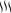

Det föreningen redan äger
Logotypen nedan är hämtad ur föreningens egna vektorfiler, inte avritad. Den fanns aldrig på den nuvarande sajten — där står bara namnet som text, och ikonen i webbläsarfliken är kvar från mallen sajten byggdes på.
Logotyp
Färg
logotypens färg
rubriker, mörka fält
från skyltarnas sidospalt
sektionsbottnar
accent på mörk botten
etiketter, små accenter
brödtext
Typsnitt
Löftaleden Ideell Förening bildades våren 2021 som ett initiativ för att tillgängliggöra områdena kring Frillesås. Vi arbetar för att öka möjligheterna till en aktiv livsstil.
Logotypens egna bokstäver är ritade för hand och används bara i logotypen — inte som rubriktypsnitt.Ikoner och handstil från kartorna
Ikonerna är urklippta ur den handritade kartan i Dropbox — samma streck som på kartan vid invigningen. De ersätter de generiska symboler jag ritade i första utkastet.
 Granar
Granar
 Vimplar
Vimplar

GräsKvar att hämta hem
Hämtat och inlagt: logotypen, ikonerna, kartans vägstil och avståndsskyltarna. Kvar finns tolv färdiga skyltoriginal i Dropbox som motsvarar informationspunkterna — med foto, källhänvisning och den engelska översättningen i en salviagrön sidospalt. Informationspunktsidan bredvid följer den uppdelningen.
Kartsidan skulle också kunna visa den handritade kartan i stället för Google-inbäddningen, men de handritade kartorna täcker bara delsträckor — hela leden finns bara som Google-karta.